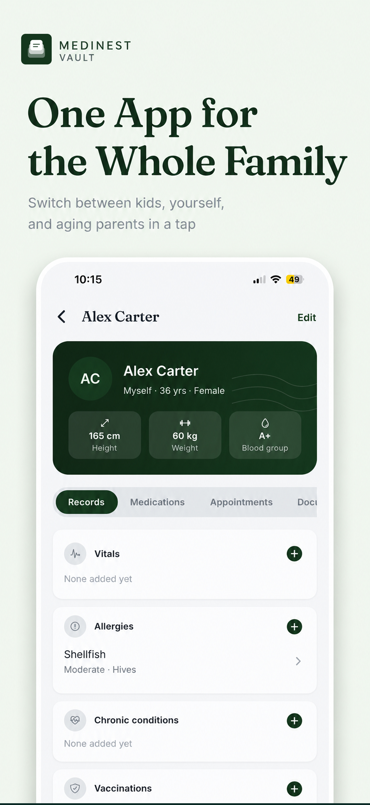

Records & Documents
How to Organize Family Medical Records
Organizing family medical records means solving two problems at once: keeping documents sorted by type (prescriptions, labs, vaccinations, insurance) and by person (which child, which parent). MediNest is a family medical records app built around exactly that two-axis structure, so nothing gets buried in one giant folder.

Why family medical records get scattered
A single-person health app assumes one patient. A family doesn't work that way — you might have a pediatrician's note for your daughter, a blood panel for yourself, and a cardiologist's report for your father, all arriving in the same week, through different channels: paper handed over at the clinic, PDFs emailed by a lab, photos texted by a sibling. Without a shared system, each piece lands in a different app, folder, or drawer, and by the time you need it, nobody remembers where.
How MediNest organizes family medical records
- •A profile per family member. Each person gets vitals, allergies, chronic conditions, vaccinations, medications, appointments, and documents — all under their own tab.
- •One shared vault. Switch between profiles in a tap instead of juggling separate accounts or apps per person.
- •Search and filter. Filter the whole vault by document type or by family member to find any record in seconds.
- •Automatic filing. Scan a document once and MediNest categorizes and attaches it to the right person automatically.
Setting up your family's records in MediNest
- Create a profile for each family member — name, age, sex, and basic vitals.
- Scan or upload existing prescriptions, lab reports, and vaccination cards for each person.
- Add allergies and chronic conditions so they show up automatically on doctor visits and emergency cards.
- Use the search bar or filters whenever you need to pull up a specific record.
Frequently asked questions
What's the best way to organize family medical records?
Group records by family member first, then by category (prescriptions, lab reports, vaccinations, insurance). MediNest structures your vault exactly this way, so anyone's full history is one tap away.
Can I keep records for my kids and my parents in the same app?
Yes. MediNest supports unlimited family member profiles, so kids, yourself, and aging parents all live in the same vault with separate, switchable profiles.
Keep every family member's records in one vault
Free to start. No credit card required.
Get Notified at Launch